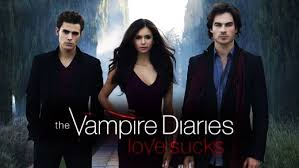

TEMPORADA 3: La serie fue renovada para una tercera temporada, que se estrenó el 15 de septiembre de 2011.2Esta temporada contó con el ascenso de Klaus (Joseph Morgan) a personaje principal. El argumento de la temporada se centró en la historia de la familia de los vampiros Originales, además de revelarse el auténtico motivo por el que Klaus quería convertirse en híbrido y el por qué de querer a Stefan de su parte. La temporada contó con la incorporación de Claire Holt como Rebekah, una de los Originales que en el pasado tuvo una relación amorosa con Stefan; Jack Coleman como Bill Forbes, el padre de Caroline, que regresa a Mystic Falls para intentar ayudar a su hija; Persia White como Abby Bennet, la madre de Bonnie; Torrey DeVitto como Meredith Fell, una médicoo que se interesará mucho por la rapidez de recuperación de Alaric; y Alice Evans como Esther, la madre de los Originales; así como el regreso de Daniel Gillies como Elijah. La temporada contó con la incorporación de Claire Holt como Rebekah, una de los Originales que en el pasado tuvo una relación amorosa con Stefan; Jack Coleman como Bill Forbes, el padre de Caroline, que regresa a Mystic Falls para intentar ayudar a su hija; Persia White como Abby Bennet, la madre de Bonnie; Torrey DeVitto como Meredith Fell, una médicoo que se interesará mucho por la rapidez de recuperación de Alaric; y Alice Evans como Esther, la madre de los Originales; así como el regreso de Daniel Gillies como Elijah
TEMPORADA 4
La serie fue renovada por una cuarta temporada el 4 de mayo de 2012, que se estrenó el 11 de octubre de 2012. Comienza con el conocimiento de que todo está en transición. Elena se enfrenta a su peor pesadilla cuando se despierta después del accidente y descubre que murió con la sangre de Damon en su sistema, que ahora deberá soportar la transición para convertirse en una terrible vampiresa – o enfrentarse a una muerte segura. Stefan y Damon se desgarran aún más por cómo ayudar a Elena, que se tiene que adaptar a una vida que ella nunca quiso, y todo el mundo tiene que hacer frente al caos, más una complicación surgida que deberán resolver por el bien de Elena, Damon y Stefan.Stefan y Damon se desgarran aún más por cómo ayudar a Elena, que se tiene que adaptar a una vida que ella nunca quiso, y todo el mundo tiene que hacer frente al caos, más una complicación surgida que deberán resolver por el bien de Elena, Damon y Stefan.Stefan y Damon se desgarran aún más por cómo ayudar a Elena, que se tiene que adaptar a una vida que ella nunca quiso, y todo el mundo tiene que hacer frente al caos, más una complicación surgida que deberán resolver por el bien de Elena, Damon y Stefan.